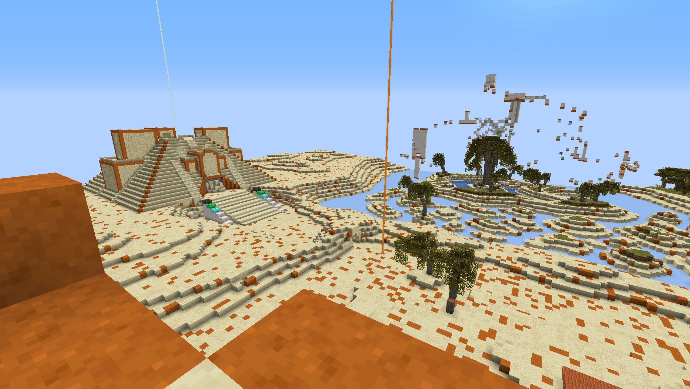

Minecraft Tournoi des Légendes
Ce projet est assez ambitieux dans le sens où il est nécessaire d'avoir de nombreux modes de jeu disponibles pour le considérer comme terminé.
Le Meltdown est aujourd'hui le seul mode de jeu qui peut être considéré comme complètement terminé et c'est donc sur ce mode en particulier que cette présentation va détailler.
Les jeux ont été imaginés pour être joué à 8 équipes de 4 joueurs. Par leurs performances individuelles et collective, les joueurs gagnent des Coins. Ces Coins sont liés à leur profile et sert à avoir un classement personnel.
L'équipe rassemble la somme des Coins de chacun de ses membres, de cette façon on peut les classer.
Le Meltdown est basé sur la coopération entre les joueurs d'une équipe. En effet, une équipe est éliminée seulement si tous ses joueurs sont congelés. De plus, la pioche servant à récupérer les blocs de Coins ne peuvent être utilisés que par un
joueur de l'équipe à la fois. Il est donc primordiale de s'organiser afin de pouvoir obtenir le plus d'or possible en éliminant les équipes adverse.
Le meltdown est organisé en salles, qui s'ouvrent au fur et à mesure que le temps passe.
Les salles aux extrêmités sont les points d'apparition des équipes. Elles ont directement accès à la salle devant elles. Les salles d'ouvrent au fur et à mesure, se rapprochant du centre et permettant aux équipes de se rencontrer.
Pour pousser les joueurs à se rendre au centre, les salles vont progressivement "fondre" à partir d'un certain temps de jeu, d'où le nom "Meltdown". Des alarmes s'activent dans ces salles 1 minute avant qu'elles ne commencent à fondre,
avec un signal sonore (le tout grace au pack de texture).

|

|
Quand un joueur ennemi touche un membre de l'équipe avec un Freezing Gun, celui ci se transforme en glace. Il est désormais en mode "spectateur", où il est forcé d'avir le point de vue d'un de ses coéquipier (La caméra libre est empêchée par le plugin). Si un membre de son équipe place un Heater, il va progressivement décongeler jusqu'à être libéré, le joueur retrouve alors le contrôle de son personnage.

|
|
(Note: les noms des joueurs sont censurés car ils contenaient mon prénom.)
Quand il ne reste plus qu'une équipe les Coins gagnés durant la partie sont attribués et les joueurs téléportés au Lobby.
|  |